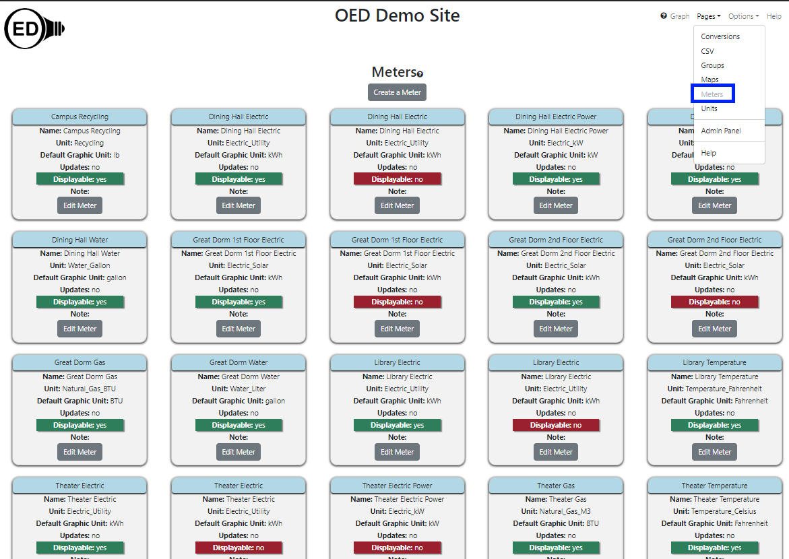

Admin Meter Viewing (Help)
{% include_relative _adminWarning.html %}
Overview
The admin meter viewing page allows admin users to see all information on meters on an OED site. It is
accessed
from
the "Pages" dropdown menu by clicking "Meters" as shown in the following
figure (highlighted in the blue
rectangle where "Meters" is grayed out since it has already been clicked). This page also allows admins to
create and edit
meters. Admins will see more columns than the typical user
as shown in the next figure and described below.

All information shown on this page is based upon the help example.
Usage
As shown in the figure above, each meter has its own card to show information about that meter. The
cards are arranged alphabetically from left to right and top to bottom by the meter's identifier.
Each card contains the following information:
- Meter Identifier. This is the "name" of the meter shown when graphing
meters. It is at the top of each card in blue. Note this is referred to as name on this page for a
non-admin user to avoid added confusion about identifier versus name since they never see the identifier.
- Name. This is the name of the meter. It is often the same as the identifier but can differ. There are two
values because OED sometimes needs to internally use a special name that is not very user friendly so the
identifier is also useful. Sites can also use this name for similar or other reasons when they want
something other than what is displayed to the user.
- Unit. This indicates the unit that the meter collects in. This is related but different than the graphing unit used. Some information on the meter unit is given on the help example page.
- Default Graphic Unit. This tells the graphing unit used if one is not
already selected before this meter is chosen.
- Displayable. This controls whether regular users can see a meter and graph it. It is "yes" in green if
everyone can see/graph this meter and "no" in red if only admins can see/graph this meter.
- Note. This may give additional information about the meter supplied when OED created it or from the
admin. Only the first 30 characters will be shown and any additional characters in the note can be seen by
clicking the "Edit Meter" button.
- Edit Meter button. Clicking this button allows one to see a lot additional information on this meter
and to edit the values associated with this meter.
In addition, there is a "Create a Meter" button near the top of the page that allows one to create a new meter.
Details
None at this time.